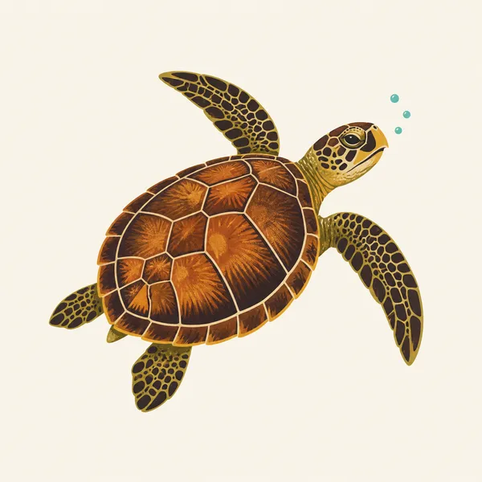
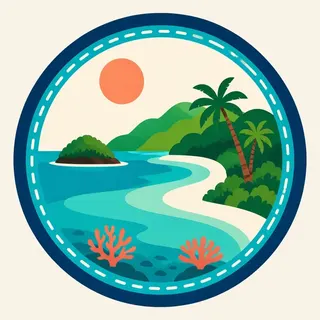

01
Trunk Bay's reef trail
An underwater snorkel trail along Trunk Cay's western side, marked with signs identifying coral and fish, a roughly 30-to-60-minute swim above the reef.
TrailMark Archive Edition
U.S. Virgin Islands | St. John
Laurance Rockefeller donated the land in 1952; Congress authorized the park August 2, 1956, protecting more than half of St. John.
Archive No. TM-VIIS-060
National Park since 1956
Collection St. John Reef
Park Overview
Laurance Rockefeller donated the land on Saint John in 1952; Congress authorized Virgin Islands National Park on August 2, 1956.
The park now totals about 14,948 acres: 7,259 acres of terrestrial and shoreline habitat, 5,650 acres of adjacent submerged lands added in 1962, and 128 acres on Hassel Island in Charlotte Amalie Harbor, St. Thomas, added in 1978. Together the land holdings cover more than half of mountainous St. John.
The park preserves coral reefs, seagrass beds, mangrove forests, salt ponds, and what NPS calls the largest and most intact dry tropical forest remaining in the Caribbean, alongside centuries of human history from Taino settlement through Danish sugar plantations.
Emotional Thesis
The header painting sets turquoise reef water curving into a white-sand bay, green hills holding the shoreline, an image close to Trunk Bay's actual look. Snorkelers there follow an underwater trail past parrotfish, yellowtail snapper, and angelfish along signed coral stations.
That same shoreline carries a harder record. At Annaberg, once St. John's largest sugar-producing estate, more than 600 enslaved people lived and worked at the plantation's peak production. The windmill tower, factory ruins, and quarters that remain are the park's most accessible historic site, not a backdrop to the beach.
Landscape Highlights
01
An underwater snorkel trail along Trunk Cay's western side, marked with signs identifying coral and fish, a roughly 30-to-60-minute swim above the reef.
02
The largest sugar-producing estate on St. John by the early 1800s, with more than 600 enslaved people at peak production; its windmill tower and factory ruins remain the park's most accessible historic district.
03
Taino religious carvings on basalt rock above a spring-fed reflection pool, reached by a nearly 3-mile, strenuous one-way hike through the Reef Bay Valley.
Wildlife
Hawksbill sea turtles forage and nest along St. John's coastline, feeding largely on the sponges and invertebrates that live within the reef the park's underwater trail interprets. The extra drawing, a swimming hawksbill, is the archive's image of that reef-dependent life.

01
The Trunk Bay reef supports parrotfish, yellowtail snapper, and angelfish among the species named on the underwater trail's signage.
02
Coral reefs, seagrass beds, and mangrove forests together form the marine habitat network that species like the hawksbill depend on across their life cycle.
03
Reef-safe sunscreen and standing only in sand, not on coral, are specific NPS guidance for protecting this habitat while snorkeling.
Geology
St. John's terrain runs from mountainous interior to coral-fringed coastline, hosting what the park calls the largest and most intact dry tropical forest remaining in the Caribbean.
01
The park's submerged lands, added in 1962, extend its protection from the shoreline out into the adjacent reef habitat, not just the visible island terrain.
02
Basalt outcrops in the Reef Bay Valley carry the Taino petroglyphs, a specific rock surface distinct from the coral and coastal sand elsewhere in the park.
03
No page opened for this essay states a specific reef acreage distinct from the general submerged-lands figure; none beyond that figure is given.
The dry season and peak visitor season; conditions are typically calmer for both hiking and snorkeling.
Transitional weather; reef visibility is often good before the wetter summer months begin.
Warmer, more humid conditions with a higher chance of tropical storms later in the season.
The height of Atlantic hurricane season; conditions and park access can change quickly, so current NPS alerts matter most this time of year.
Photography
A generic tropical beach photo could be almost anywhere. Trunk Bay's specific turquoise-to-deep-blue gradient, framed by green hills, is what places an image here.
01
The elevated view above Trunk Bay, as in the header painting, captures the reef's underwater structure visible through clear water better than a beach-level shot.
02
Annaberg's windmill and factory remains are historic structures documenting real forced labor; photograph them with that context in mind, not as a casual backdrop.
03
The Reef Bay carvings are shallow and easily washed out in flat light; early or late light angled across the rock reveals them best.
Field Notes
The reef and the ruin sit on the same coastline, one built by nature, the other by more than six hundred people who had no choice in the matter.
TrailMark Field Notes

Badge Story
The badge fails if it could be any Caribbean postcard. Trunk Bay's specific reef-and-headland shape is what claims this exact coastline.
Layered blues from deep water to reef shallows to white sand.
A green headland at the bay's edge, echoing the header painting's composition.
No cruise ship or resort structure; this is a protected coastline, not a resort beach.
Archive No.060
LocationSt. John
ReleaseReef Bay Mark
Stewardship / Safety
Coral reefs here are fragile and slow to recover; the Caribbean hurricane season can change park conditions with little notice.
Use reef-safe sunscreen and stand only in sand, never on coral, while snorkeling or swimming at Trunk Bay.
Do not touch or remove coral, shells, or artifacts; the reef and the historic sites are both non-renewable resources.
Check current NPS alerts before a visit during hurricane season (roughly June through November); conditions and access can shift quickly.
Reef Bay's petroglyph hike is strenuous and remote; carry water and allow enough daylight for the return trip.
Current conditions, fees, and alerts are on the National Park Service site.
Continue the Archive
Biscayne protects reef within sight of Miami; Virgin Islands protects a Caribbean island reef with a harder colonial history attached to its shoreline. American Samoa, also already open, is the archive's other Pacific-island tropical park, for comparison across an ocean.